DATA 608 Meetup 7: Working With Color
George I. Hagstrom
Weekly Summary
- This week is all about how to control colors in
R - Chapter 4 (and 19) of Fundamentals
- Chapter 4 of Storytelling
- Okabe-Ito Page https://jfly.uni-koeln.de/color/
- New Assignment: Airbnb Revenues in NYC
- No Discussion Next Two Weeks
Three Uses of Color
- Color to Distinguish
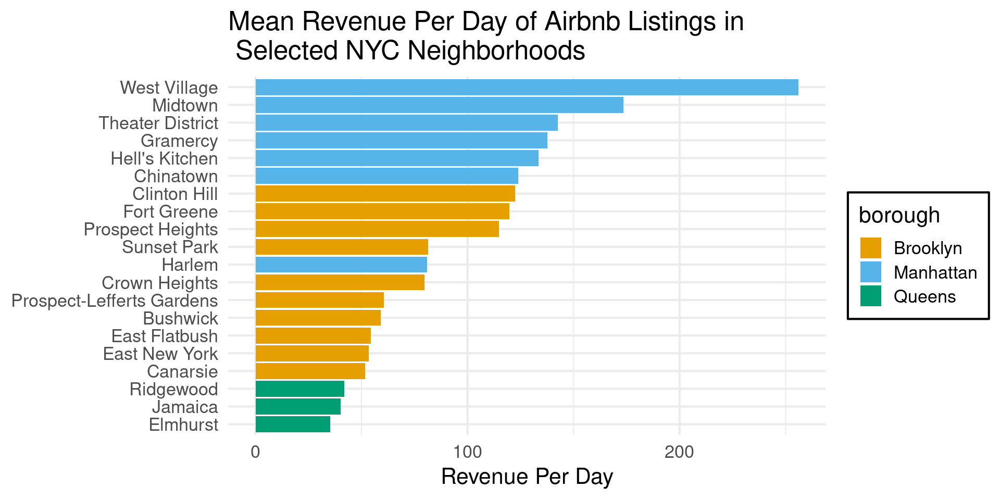
Three Uses of Color
- Qualitative Colormaps
Three Uses of Color
- Qualitative Colormaps
Three Uses of Color
- Qualitative Colormaps
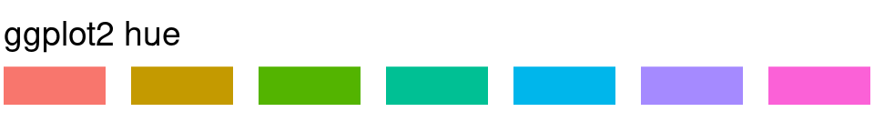
Three Uses of Color
- Represent Numerical Values
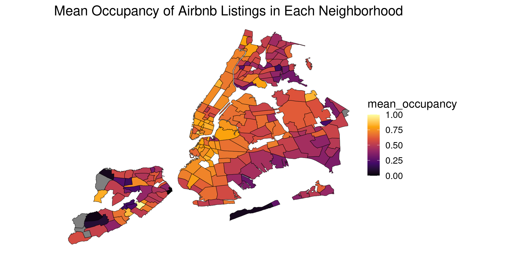
Three Uses of Color
- Highlighting
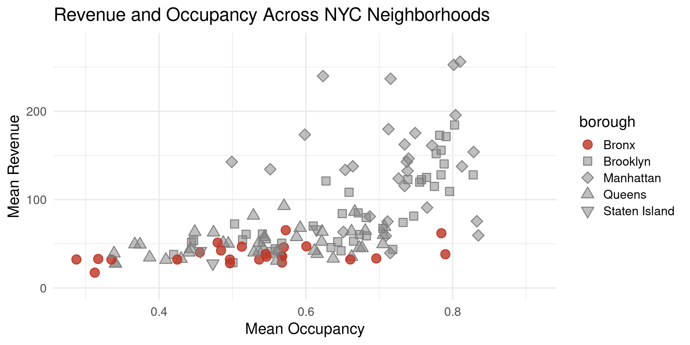
Three Uses of Color
- Highlighting

What are colors?
- Light is composed of a spectrum of
photonseach with different wavelength/energy
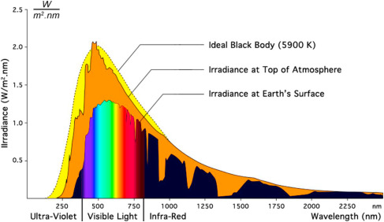
Wang and Yu 2023
What are colors?
- Primary Colors each represent single wavelength
- ROYGBIV
Wang and Yu 2023
Color Perception
- We don’t see spectrum
- Our eyes have 3 types of cone cells that sense color
- Each responds to a part of the spectrum
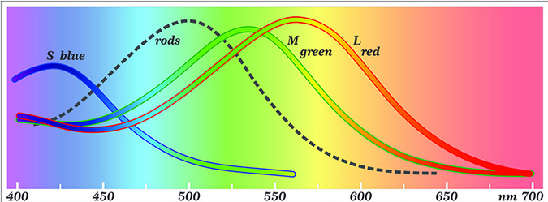
Color Perception
- Our cones reduce the full spectrum to 3 numbers
- Different 3D encodings:
- RGB mix + Luminance
- HCL (Hue + Chroma + Luminance)
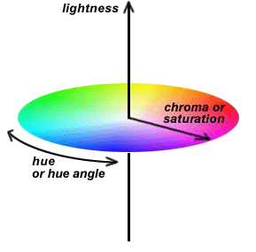
Color Vision Variability
- Number and function of each cone type can vary from person to person
- Different types of color perception referred to as colorblindness
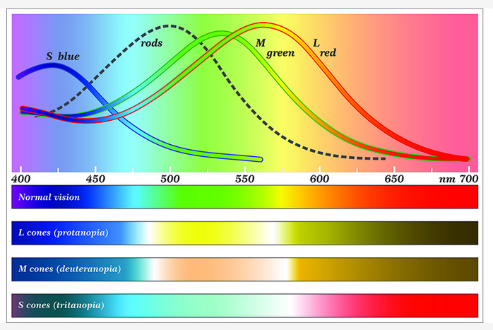
datacolor.com
Checking your Color Palettes
- www.daltonlens.com
- Simulates on Images or even entire slidedeck
- All types of colorblindness
Checking your Color Palettes
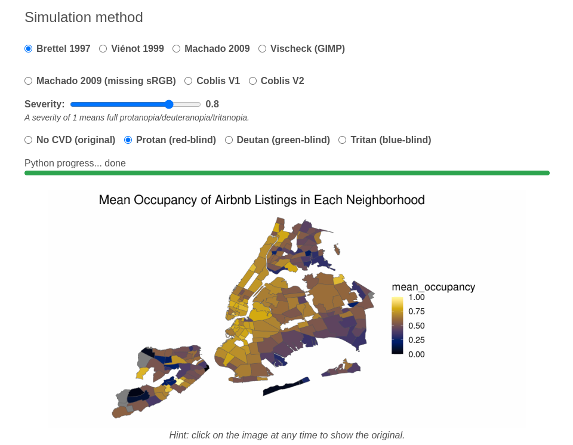
Checking your Color Palettes
colorBlindnessimulator
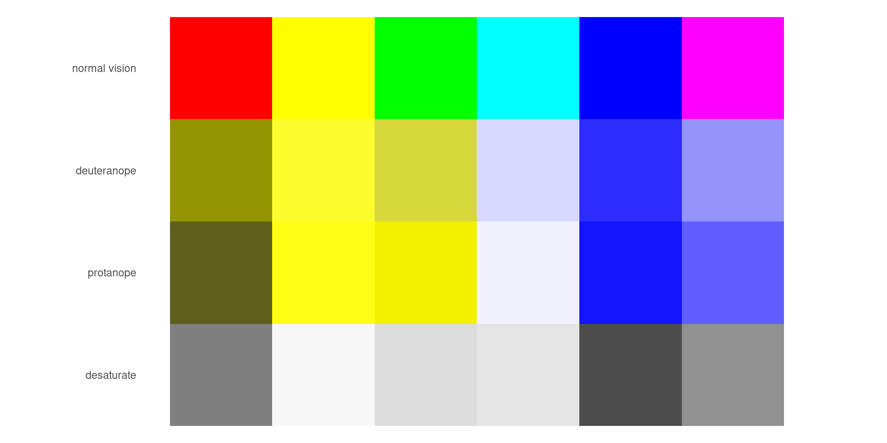
Checking your Color Palettes
colorBlindnessimulator
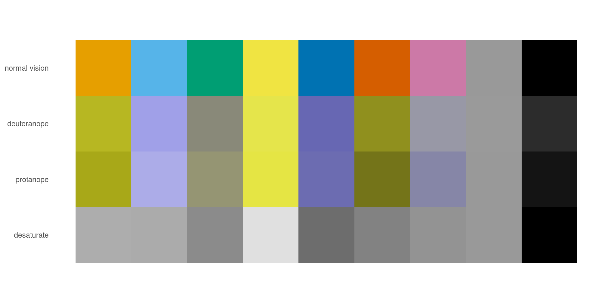
Checking your Color Palettes
colorBlindnessimulator
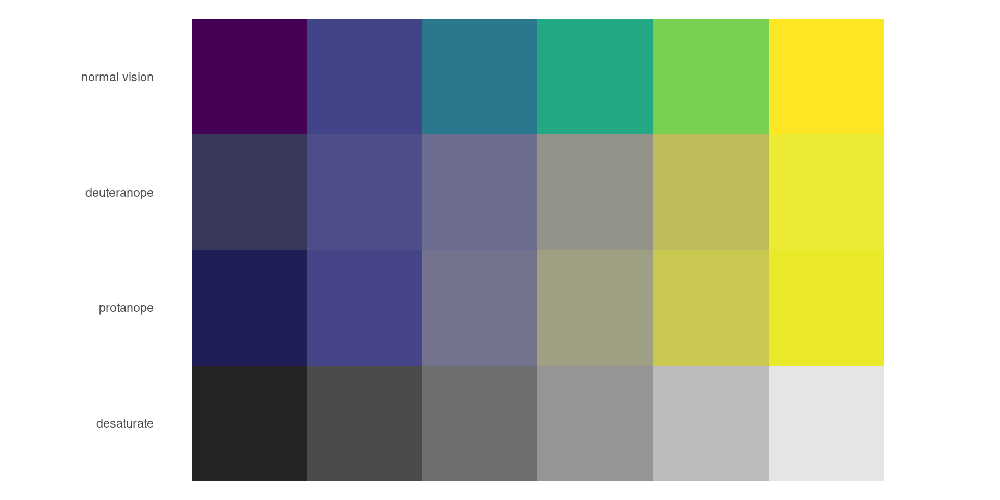
What I Do
- Stick with known accessible palettes
viridisandokabe-itofamilies- Luminance based
- Avoid red-green gradients
ggplot color scale functions
- Similar to how you control axis scales
scale_*aes*_*name_of_color_function*scale_color_xxxxcontrols color (usually border)scale_fill_xxxxcontrols fillxxxxis usually the name of a package or color scheme
Atlas of color qualtitative packages
| Command | Package | Color Safety? |
|---|---|---|
scale_fill_hue |
ggplot2 |
No |
scale_fill_brewer |
RColorBrewer |
Some |
scale_fill_paleteer_d |
paleteer |
Many |
scale_fill_okabe_ito |
ggokabeito |
Yes |
scale_fill_OkabeIto |
colorblindr |
Yes |
RColorBrewer
- Designed for discrete values on maps
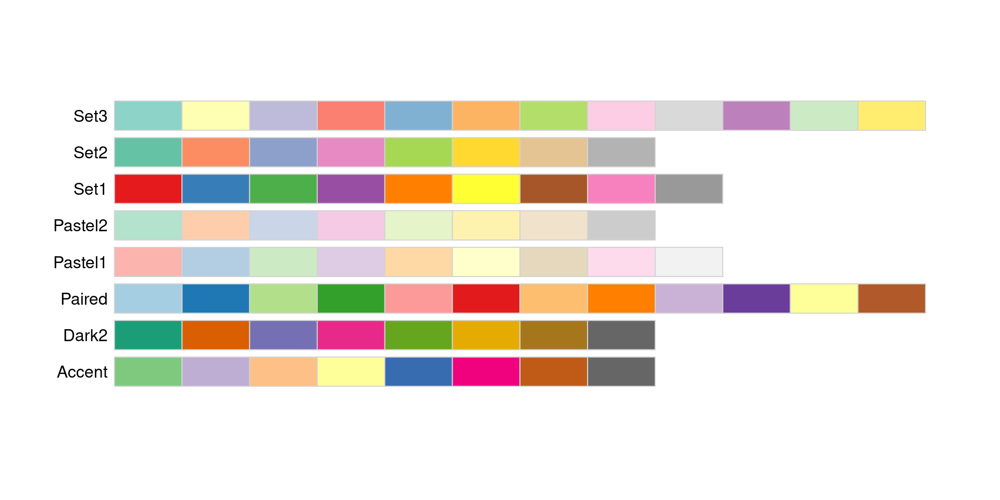
RColorBrewer
- 3 Colorblind friendly palettes
- Only friendly up to 3 categories (
Set2andDark2) or 4 categories (Paired)
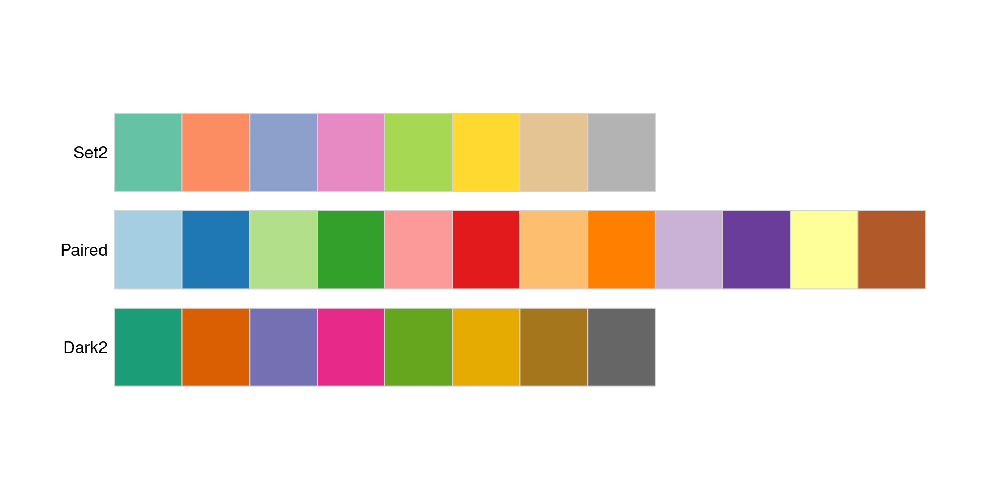
RColorBrewer
- Code for Column Plot
p1 = neighborhood_df |>
ggplot(aes(x=mean_revenue,
y=mean_revenue,
fill = borough)) +
geom_col() +
scale_y_continuous(
name = "Revenue Per Day"
) +
coord_flip() +
theme_minimal(base_size=16) +
theme(axis.title.y = element_blank(),
axis.line.y = element_blank(),
axis.ticks.length = unit(0, "pt"),
#axis.text.y = element_text(size = 10, color = borough_colors),
legend.background = element_rect(fill = "#ffffffb0")) +
labs(title = "Mean Revenue Per Day of Airbnb Listings in\n Selected NYC Neighborhoods")RColorBrewer
scale_fill_brewer()palettecan choose from list of palettesnamegives legend label
RColorBrewer
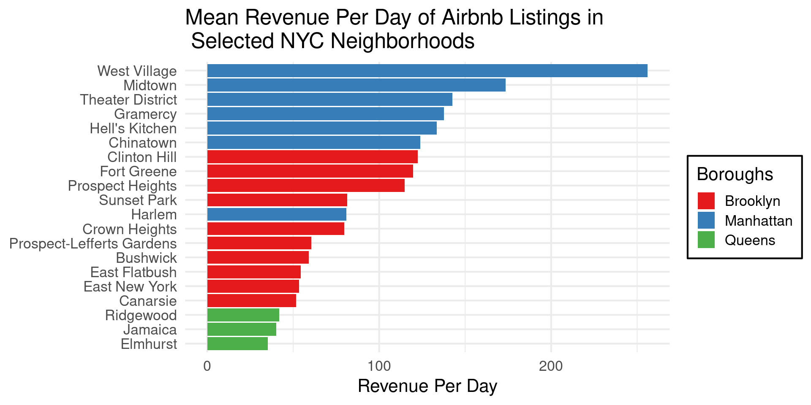
RColorBrewer
- Use
direction=-1to reverse the colors
RColorBrewer
- Use
direction=-1to reverse the colors
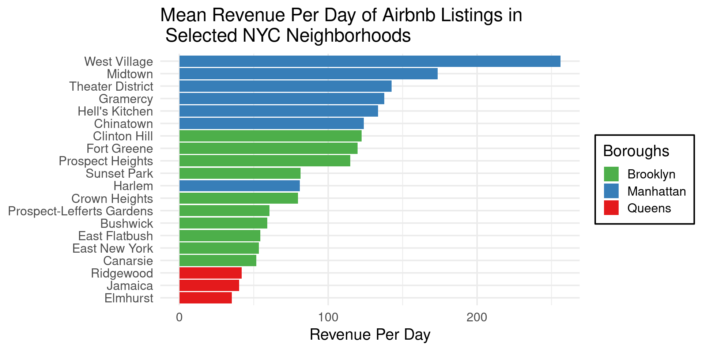
RColorBrewer
- If you forget names, you can use
type="qual"andpalette= number:
RColorBrewer
- If you forget names, you can use
type="qual"andpalette= number:
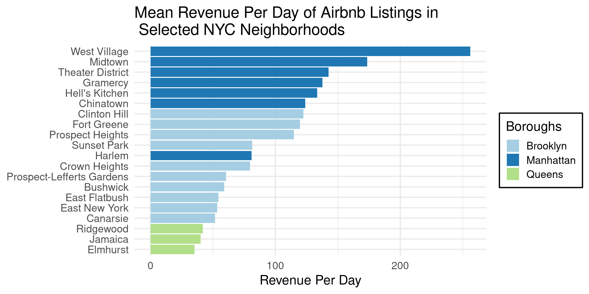
RColorBrewer
na.value="grey30"tells us the color for missing valuesguide = colorbar, legend, or colorstepssays type of colorbar
RColorBrewer
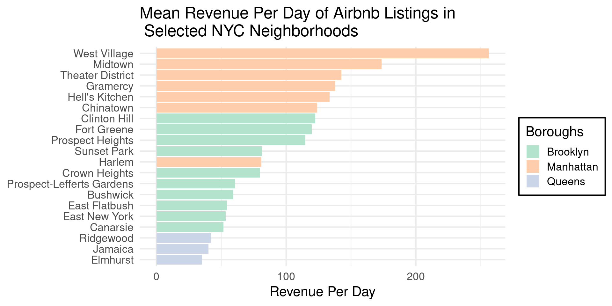
ggokabeito
scale_fill_okabe_ito- Takes many of same arguments as
scale_fill_brewer - Also can give “order” for colorscale
ggokabeito
scale_fill_okabe_ito
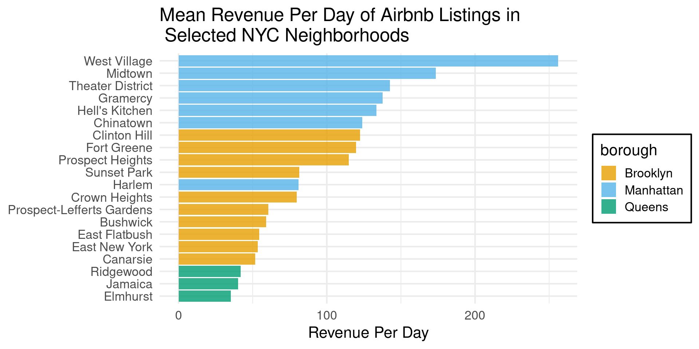
ggokabeito order
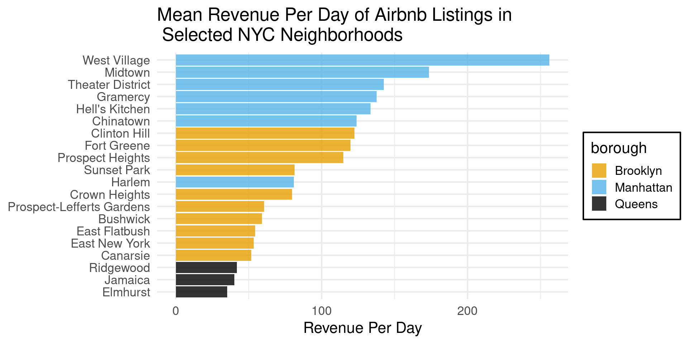
Tons of other options….
- The main options all work like this
- Default arguments plus some special options
colorspacepackage is really nice and brings a bit of order
Choosing Discrete Colors
- For Categorical Data
- Each Color above 6 should make you wince
- For colorblind friendliness, becomes very hard
- Don’t represent numbers
- Maximally Distinctive
Color for Scatterplots
- Brighter Colors Better for Small Points
library(palmerpenguins)
point = penguins |> ggplot(aes(bill_length_mm, bill_depth_mm)) +
geom_point(aes(colour = species)) +
theme_minimal(base_size=16) +
labs(x = "Bill Length (mm)", y =
"Bill Depth (mm)")
# three palettes
#point + scale_colour_brewer(palette = "Set1")
#point + scale_colour_brewer(palette = "Set2")
#point + scale_colour_brewer(palette = "Pastel1")Color for Scatterplots
- Brighter Colors Better for Small Points
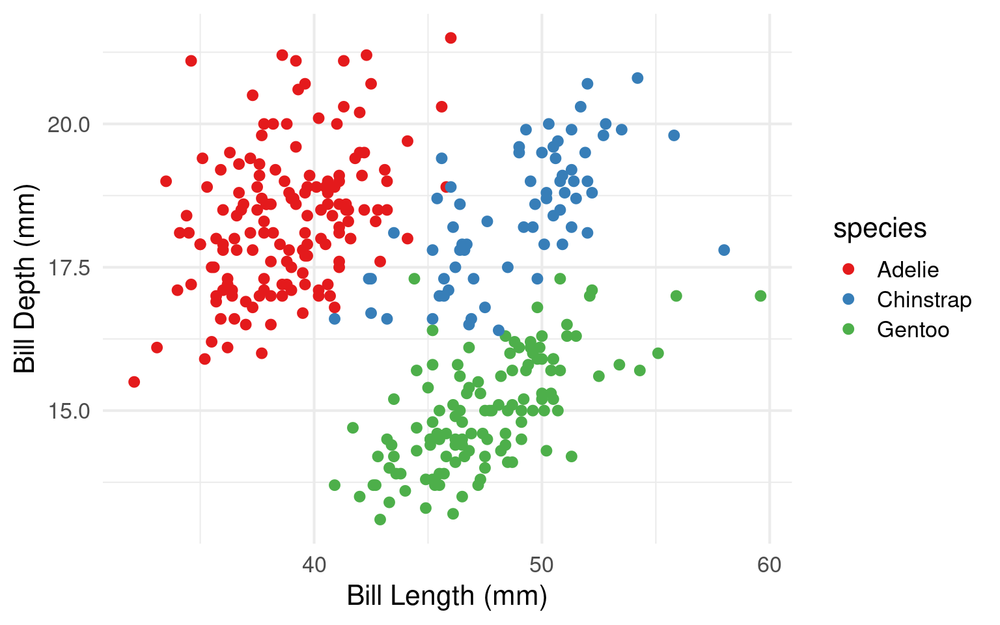
Color for Scatterplots
- Brighter Colors Better for Small Points
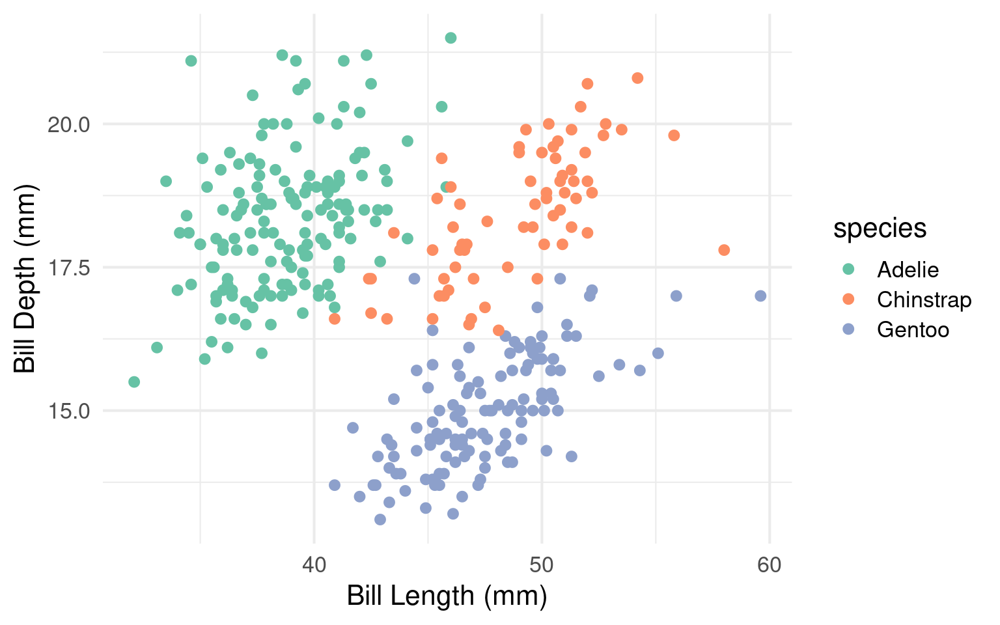
Color for Scatterplots
- Brighter Colors Better for Small Points
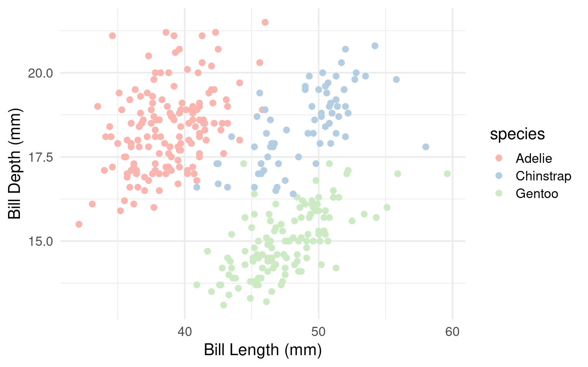
Color for Fill
- Subtler colors work better for Areas
plot = nyc_bnb |> group_by(borough) |> filter(number_of_reviews_ltm>20) |>
summarise(revenue = mean(revenue/accommodates,na.rm=TRUE)) |>
ggplot(aes(x=fct_reorder(borough,desc(revenue)),y=revenue,fill=borough)) +
geom_col() +
theme_minimal(base_size=16) +
labs(x = "Borough", y =
"Mean Revenue",
title = "Revenue per person across boroughs")Color for Fill
- Subtler colors work better for Areas
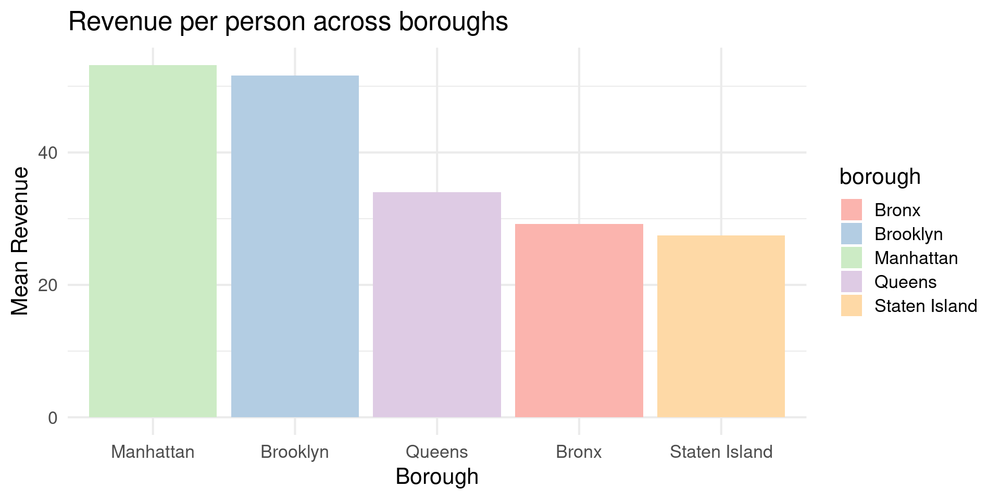
Color for Fill
- Subtler colors work better for Areas
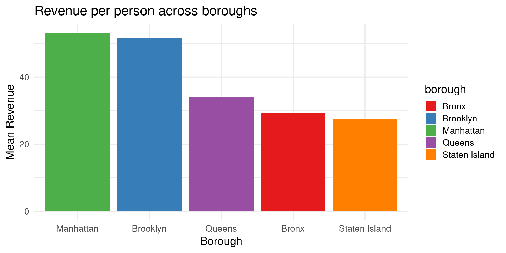
Color for Fill
- Subtler colors work better for Areas
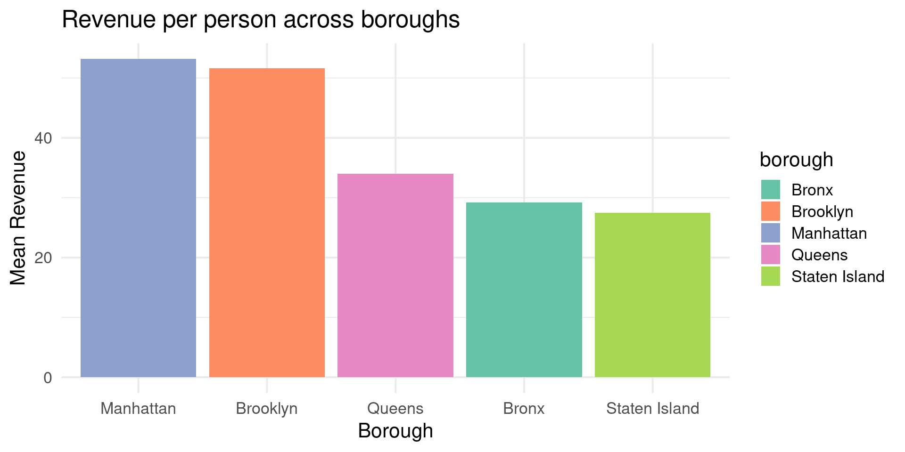
Color for Fill
- Colorspace controls for accents
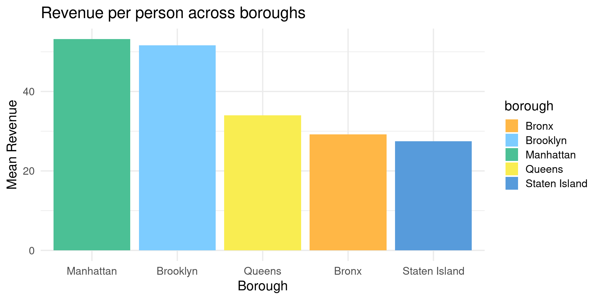
Setting Colors Manually
- In many cases want to pick the colors for each category
- Especially important for accenting color palettes
alphamodifies the colors and creates fill vector
Setting Colors Manually
neighborhood_df |> filter(!is.na(borough) & num_listings>20) |>
ggplot(aes(x=mean_occupancy,y=mean_revenue,color=borough,shape=borough,fill=borough)) +
geom_point(size=4) +
scale_y_continuous(limits = c(0,275)) +
scale_shape_manual(values = 21:25) +
scale_color_manual(values = colors) +
scale_fill_manual(values = fills) +
theme_minimal(base_size = 16) +
labs(title = "Revenue and Occupancy Across NYC Neighborhoods")+
xlab("Mean Occupancy") +
ylab("Mean Revenue")Setting Colors Manually
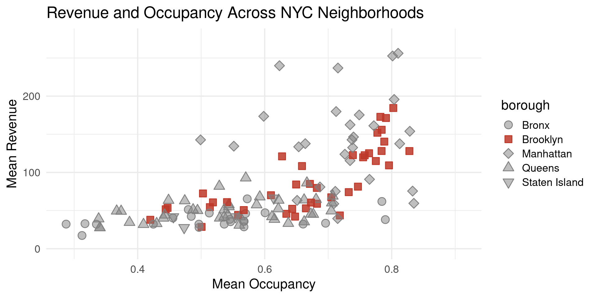
More scale_fill_manual
plot_2 +
scale_color_manual(values =
c("Manhattan"="#BD3828",
"Brooklyn" = "#92540040",
"Staten Island" = "#92540040",
"Queens" = "#92540040",
"Bronx" = "#92540040")) +
scale_fill_manual(values =
c("Manhattan"="#BD3828",
"Brooklyn" = "#92540040",
"Staten Island" = "#92540040",
"Queens" = "#92540040",
"Bronx" = "#92540040")) 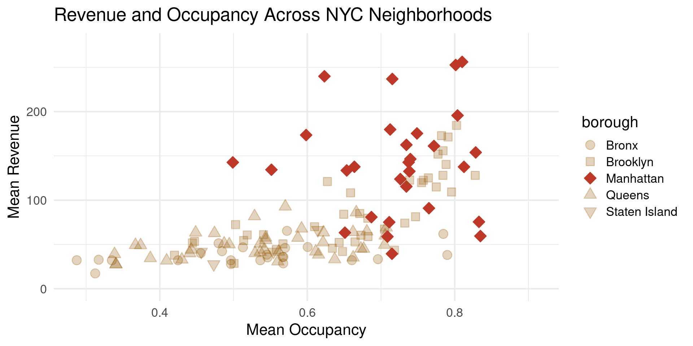
What do Codes Mean?
- (Red)(Green)(Blue)(alpha)
- Each is a two hex numbers:
- (1,2,3,4,5,6,7,8,9,A,B,C,D,E,F)
Codes for Okabe-Ito
| Name | Hex code |
|---|---|
| orange | #E69F00 |
| sky blue | #56B4E9 |
| bluish green | #009E73 |
| yellow | #F0E442 |
| blue | #0072B2 |
| vermilion | #D55E00 |
| reddish purple | #CC79A7 |
| black | #000000 |
How to get the codes?
- Different functions:
[1] "#A6CEE3" "#1F78B4" "#B2DF8A" "#33A02C" "#FB9A99" "#E31A1C" "#FDBF6F"
[8] "#FF7F00" "#CAB2D6" "#6A3D9A" "#FFFF99" "#B15928"[1] "#E69F00" "#56B4E9" "#009E73" "#F0E442" "#0072B2" "#D55E00" "#CC79A7"
[8] "#999999" "#000000"[1] "#F4BA73" "#ABC7DE" "#0BC490" "#F2EBAE" "#589BDB" "#E78F72" "#C9AABA"
[8] "#B7B7B7"